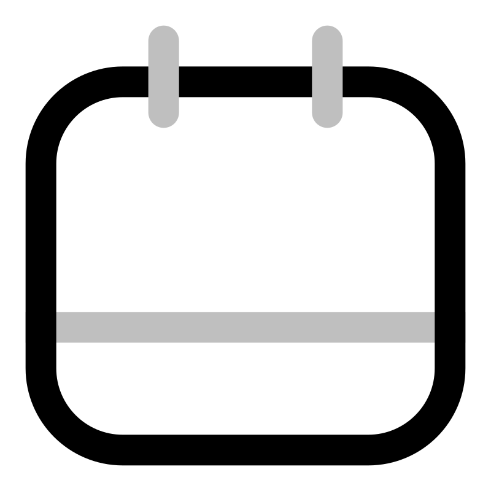

<ion-header>
  <ion-toolbar color="primary">
    <ion-buttons slot="start">
      <ion-icon name="lock-closed" class="title-icon"></ion-icon>
      <ion-title>SecureNotes</ion-title>
    </ion-buttons>
    <ion-searchbar
      slot="end"
      placeholder="Search notes..."
      debounce="300"
      class="custom-search"
      (ionInput)="searchNotes($event)">
    </ion-searchbar>
  </ion-toolbar>
</ion-header>

<ion-content class="home-content">
  <ion-refresher slot="fixed" (ionRefresh)="refreshNotes($event)">
    <ion-refresher-content></ion-refresher-content>
  </ion-refresher>

  <ion-fab vertical="bottom" horizontal="end" slot="fixed">
    <ion-fab-button class="fab-button" (click)="createNewNote()">
      <ion-icon name="add-outline"></ion-icon>
    </ion-fab-button>
  </ion-fab>

  <div class="notes-grid">
    <ion-card
      *ngFor="let note of notes"
      class="note-card">
      <div class="card-header">
        <ion-card-title class="note-title">
          {{ note.title || 'Untitled Note' }}
        </ion-card-title>
        <ion-badge
          *ngIf="note.encrypted"
          color="success"
          class="encrypted-badge">
          <ion-icon name="lock-closed"></ion-icon> Encrypted
        </ion-badge>
      </div>
      <ion-card-content class="note-content">
        {{ note.content | truncate:100 }}
      </ion-card-content>
      <div class="card-footer">
        <ion-icon name="calendar-outline" class="footer-icon"></ion-icon>
        <span class="date">
          {{ note.createdAt | date:'dd.MM.yyyy, HH:mm' }}
        </span>
        <ion-button
          fill="clear"
          color="danger"
          size="small"
          (click)="deleteNote($event, note)"
          class="delete-btn">
          <ion-icon slot="icon-only" name="trash-outline"></ion-icon>
        </ion-button>
      </div>
    </ion-card>
  </div>

  <div *ngIf="notes.length === 0" class="empty-state">
    
    <h2>No Notes Found</h2>
    <p>Start by creating your first secure note</p>
    <ion-button shape="round" (click)="createNewNote()">
      Create Note
      <ion-icon slot="end" name="add-outline"></ion-icon>
    </ion-button>
  </div>
</ion-content>
